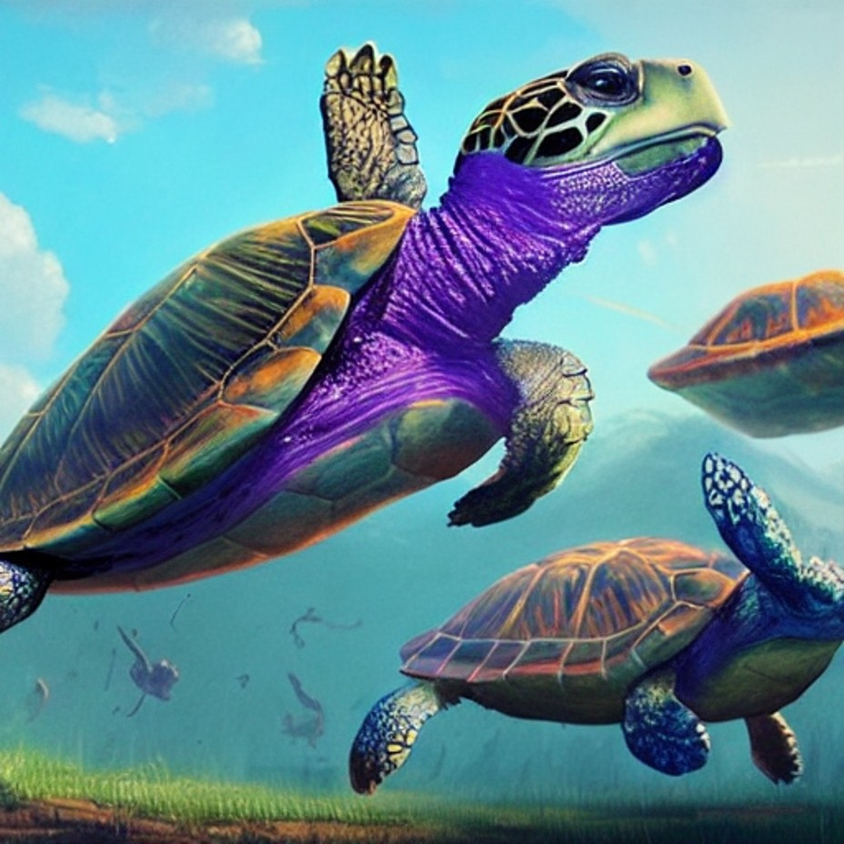

Turtle Games
Turtle is a Python library that enables users to create a virtual canvas for drawing pictures and interactive shapes. It provides a fun and intuitive way for beginners to learn programming fundamentals, while also allowing them to explore more advanced concepts. I have used Turtle to recreate classic games such as Pong and Snake, as well as a game called Turtle Race. You can find below a description of these three games along with some screenshots.
Pong
In my recreation of Pong using Python's turtle module, players control paddles on either side of the screen to hit a ball back and forth. The goal is to make the ball miss the opponent's paddle and score points. The game features simple graphics mimicking the original Pong game released by Atari in 1972. The game is played in a two-dimensional space with a single ball and two paddles. The Python code handles collision detection, score keeping, and other game mechanics. Overall, the recreation of Pong using Python's turtle module is a fun and engaging way to experience the classic game in a new way.
Snake
In my recreation of Snake using Python's turtle module, players control a snake that moves around the screen, eating food to grow in length while avoiding walls and its own tail. The game features simple graphics reminiscent of the classic Snake game popularized on Nokia mobile phones. The Python code handles movement, collision detection, and score keeping. As players progress through the game, the snake grows longer, making it more challenging to avoid obstacles. Snake is a fun and addictive game that is sure to provide hours of entertainment for players of all ages.
Turtle Race
Turtle Race lets players choose one of the seven VIBGYOR colors. Seven turtles then line up for a race, with the order matching the VIBGYOR sequence. The winner of the race is determined randomly, making the outcome unpredictable and exciting. As the colorful turtles move across the screen towards the finish line, players can watch the action unfold in a fun and engaging way. With its vibrant graphics and lighthearted gameplay, Turtle Race offers a simple yet entertaining experience that is suitable for all ages.
Chakraborthy's Cookbook
Chakraborthy's Cookbook is a comprehensive recipe website offering a diverse collection of recipes for various meal types such as breakfast, dinner, drinks, dessert, and appetizers. The recipes are presented in an organized manner to help users quickly find what they're looking for. Each recipe is described in clear and concise language and is accompanied by helpful images. With its user-friendly interface, Chakraborthy's Cookbook is a go-to resource for anyone seeking to discover new and delicious recipes.